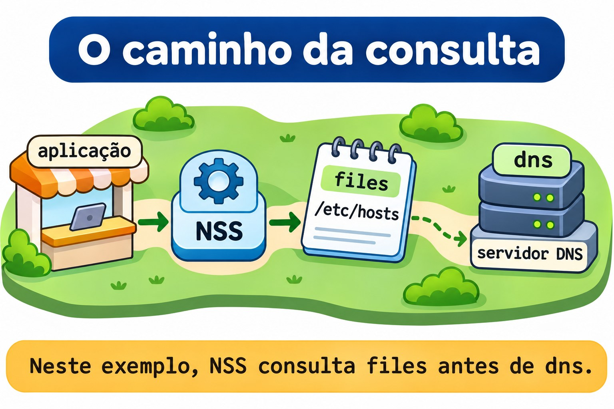
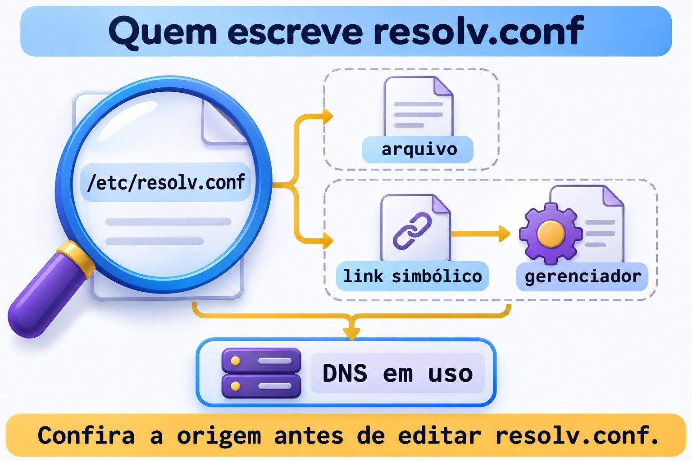

Aula 11.4 · Nomes e resolução
No Windows Server, nome do computador, arquivo local de hosts e servidor DNS são peças diferentes. No Linux, a mesma separação evita mudanças no lugar errado. Depois de identificar o gerenciador da interface na 11.3, você vai descobrir como um programa encontra o IP de um nome, alterar o hostname no lab e conferir quem mantém a configuração de resolução.
Núcleo desta aula: hostname identifica a máquina; resolução transforma um nome em endereço; NSS escolhe as fontes para programas que usam esse mecanismo. Resolver um nome não comprova que a aplicação respondeu. O resto é aprofundamento.
| Ficha | |
|---|---|
| Módulo | M11 · Rede, aula 4 de 5 |
| Quando | Semana 17 |
| Ao final | Você distingue hostname e resolução, consulta NSS com getent e identifica a origem de resolv.conf |
| Pré-requisitos | Aulas 11.1 a 11.3; SSH, sudo, noVNC, python3 e curl nas duas VMs |
| Tempo | Cerca de 90 minutos, mais 30 minutos para repetir sem consultar |
| Snapshots | m11a4-inicio e m11a4-fim nas VMs 201 e 202 |
1 · Aquecimento
Responda sem consultar. O gabarito fica no fim.
- Por que um arquivo correto pode não participar da configuração de uma interface?
- Que comando mostra a decisão de rota para um IP sem enviar um pacote de teste?
- Resolver um IP ou receber resposta ICMP comprova que o HTTP funciona?
2 · Por que importa
O chamado diz que a aplicação abre pelo IP, mas não pelo nome. Você troca o gateway e reinicia a rede. Nada muda: o nome estava associado a outro IP em /etc/hosts. O caminho da rede funcionava; a primeira hipótese deveria ter sido a resolução usada pelo cliente.
| Pergunta | Evidência |
|---|---|
| Como a máquina se identifica? | hostnamectl --static |
| Que IP o sistema obtém para um nome? | getent ahostsv4 NOME |
| O arquivo local contém a entrada? | Consulta de files e leitura de /etc/hosts |
| Quais fontes participam? | Linha hosts: de /etc/nsswitch.conf |
| Qual resposta a aplicação recebeu? | Cliente do protocolo, como curl |
Um resultado de resolução é uma etapa do diagnóstico. Compare o endereço retornado com o endereço em que o serviço realmente atende.
3 · Modelo mental
Pense em um prédio com placa de identificação, agenda local e central de informações. A placa é o hostname. A agenda é /etc/hosts. A central representa o DNS. O recepcionista que decide onde procurar representa o NSS.
programa → NSS → fontes configuradas → endereço → conexão → aplicação
files: /etc/hosts
dns: consulta DNSMudar a placa do prédio não envia automaticamente uma atualização à central de informações. Algumas redes têm mecanismos próprios de atualização dinâmica; hostnamectl não é, por si só, uma ferramenta de publicação de registros DNS.

Ponte Windows
| Windows Server | Linux | Ideia que você reaproveita |
|---|---|---|
| Nome do computador | hostnamectl | Identidade local do sistema |
| Arquivo local de hosts | /etc/hosts | Associação local entre nome e IP |
| Configuração do cliente DNS | Origem de /etc/resolv.conf e gerenciador | Onde o cliente obtém seus servidores |
| Consultar a resolução do sistema | getent | Perguntar pelo caminho usado por programas integrados ao sistema |
| Testar a aplicação depois do nome | Cliente do protocolo | Nome resolvido e serviço funcionando são evidências distintas |
4 · O essencial
Hostname não é registro DNS
hostnamectl --static consulta o hostname estático. Ele é persistente, normalmente armazenado em /etc/hostname. O hostname transitório funciona como alternativa recebida da configuração de rede; o nome descritivo, chamado pretty hostname, tem finalidade de apresentação.
No lab, você usará hostnamectl --static set-hostname para alterar apenas a identidade estática. O nome exibido em um prompt já aberto pode ficar antigo; consulte a ferramenta e o arquivo em vez de tomar o prompt como prova.
hosts: IP, nome principal e aliases
Uma entrada de /etc/hosts começa pelo endereço, seguido do nome principal e dos aliases. Nomes sem domínio e nomes completos só são equivalentes quando a configuração usada pela consulta estabelece essa relação.
127.0.0.2 app.m11.test app-m11Essa linha cria um mapa local para dois nomes. Ela não cria um servidor DNS, não configura um IP na placa Ethernet e não publica nada para outras máquinas. No Linux, 127.0.0.0/8 é a faixa de loopback; o serviço deste lab ficará somente nela.
NSS: a ordem e as condições importam
/etc/nsswitch.conf define fontes de consulta para bases como usuários, grupos e hosts. O trecho abaixo é um exemplo de linha, não uma instrução para substituir a sua configuração:
hosts: files dnsNesse exemplo, a consulta tenta a tabela local antes do DNS. Outras instalações usam fontes como myhostname e resolve, além de condições entre colchetes que mudam quando a consulta continua ou termina. Leia a linha inteira.
Na Rocky, a configuração de NSS pode ser mantida pelo authselect. Não reescreva nsswitch.conf para encaixar o lab. Aqui você apenas lê a política e compara consultas.


getent: perguntar ao sistema e isolar uma fonte
| Consulta | O que você observa |
|---|---|
getent ahostsv4 NOME | Resolução IPv4 pelo mecanismo NSS |
getent -s files ahostsv4 NOME | Somente a tabela local de hosts, para IPv4 |
getent -s files hosts NOME | Entrada da tabela local, incluindo o exemplo IPv6 |
getent -s dns ahostsv4 NOME | Consulta pela fonte DNS, sem usar a entrada de files |
ahostsv4 pode mostrar o mesmo IP em linhas para tipos de socket diferentes. Isso não significa que você gravou várias entradas. O código 2 de getent indica que uma chave não foi encontrada.
Programas também podem manter cache próprio ou usar outro mecanismo de resolução. O lab usa clientes novos a cada teste para comparar as fontes sem depender de uma aplicação que ficou aberta.
resolv.conf: conteúdo e responsável
O cliente DNS tradicional lê /etc/resolv.conf. nameserver informa um servidor; search define sufixos de busca para nomes relativos; options ajusta o comportamento do resolvedor. Um sufixo de busca não cria uma entrada em /etc/hosts.
O arquivo pode ser regular ou um link simbólico para conteúdo gerado. NetworkManager, DHCP e ferramentas de integração como resolvconf podem participar dessa manutenção. Com systemd-resolved, 127.0.0.53 costuma representar um resolvedor local, não necessariamente o DNS final da rede.
Se NSS usa a fonte resolve, parte da resolução conversa diretamente com systemd-resolved. Por isso, a linha NSS, o arquivo e o serviço ativo precisam ser lidos juntos. Não instale nem inicie resolved apenas porque viu um exemplo dele.


Rocky × Debian
| Item | Rocky 9, VM 201 | Debian 13, VM 202 |
|---|---|---|
| Acesso | ssh rocky-lab | ssh debian-lab |
| IP da placa do curso | 10.1.0.51 | 10.1.0.52 |
| Hostname temporário deste exercício | rocky-nomes | debian-nomes |
| Mapa local e política NSS | /etc/hosts e /etc/nsswitch.conf | Mesmos caminhos |
| Origem do DNS | Confira NetworkManager e a configuração carregada | Confira o gerenciador identificado na 11.3 |
| Ferramenta de consulta | getent, fornecido por glibc-common | getent, fornecido por libc-bin |
| Endereço do serviço local | 127.0.0.2:18084 | Mesmo endereço dentro da própria VM |
5 · Lab guiado
Faça a sequência inteira na Rocky e depois no Debian, como student. Abra duas sessões por VM: A para o servidor HTTP e B para consultas. As mudanças serão no hostname estático e em um bloco marcado de /etc/hosts. Não altere DNS, endereço da placa, gateway ou política NSS.
Antes de alterar: confira acesso pelo noVNC e a sessão SSH por alias. A alteração do nome local não muda o IP nem a chave SSH da VM. Não faça o exercício no nó Proxmox.
Passo 0 · Guardar o ponto de volta. No nó Proxmox de cada VM:
Palpite: o snapshot registra por que você mudou uma entrada ou esse raciocínio precisa estar no diário?
qm snapshot 201 m11a4-inicio
qm snapshot 202 m11a4-inicio
qm listsnapshot 201
qm listsnapshot 202Saída esperada: m11a4-inicio aparece nas duas listas.
Verifique: confirme os snapshots antes de seguir para as VMs.
Passo 1 · Registrar a identidade e as fontes. Na janela B:
Palpite: o nome visto no prompt mostra qual servidor DNS está configurado?
mkdir -m 0700 "$HOME/m11a4"
hostnamectl --static | tee "$HOME/m11a4/hostname.inicio"
ip -br address | tee "$HOME/m11a4/enderecos.inicio"
grep -n '^hosts:' /etc/nsswitch.conf
ls -l /etc/resolv.conf
readlink -f /etc/resolv.conf
cat /etc/resolv.conf
command -v getent python3 curl timeoutSaída esperada: hostname estático atual, endereços reais, linha NSS e configuração local de resolução.
Verifique: pare se a pasta já existir ou o hostname estático estiver vazio. Para o caminho padrão esperado neste lab, files precisa participar antes de fontes e condições que encerrem a consulta; registre uma política diferente antes de tentar aplicar o roteiro. Se command -v não listar as quatro ferramentas, instale a que faltar, como sudo apt install curl no Debian.
Passo 2 · Proteger o arquivo e reservar nomes.
Palpite: copiar hosts para um backup já muda a resolução usada pelos programas?
sudo cp -a -- /etc/hosts "$HOME/m11a4/hosts.inicio"
sudo grep -n -E 'm11a4|app\.m11\.test|app-m11|app6\.m11\.test|rocky-nomes|debian-nomes' /etc/hosts
ss -ltn 'sport = :18084'Saída esperada: backup criado, nenhuma correspondência para os nomes reservados e somente o cabeçalho do filtro de sockets.
Verifique: se algum nome ou a porta já estiver em uso, pare e identifique o recurso. Não remova entradas existentes para liberar o exercício.
Passo 3 · Criar o mapa local antes de trocar o hostname. Na Rocky, execute somente:
Palpite: preparar uma entrada local faz com que outra máquina também conheça esse nome?
NOVO_HOST=rocky-nomesNo Debian, execute somente:
NOVO_HOST=debian-nomesDepois, na janela B da VM em teste:
printf '# BEGIN m11a4\n127.0.1.1 %s\n127.0.0.2 app.m11.test app-m11\n::1 app6.m11.test\n# END m11a4\n' "$NOVO_HOST" | sudo tee -a /etc/hosts
getent -s files ahostsv4 "$NOVO_HOST"
getent -s files ahostsv4 app.m11.test
getent -s files hosts app6.m11.testSaída esperada: o novo nome local retorna 127.0.1.1; a aplicação retorna 127.0.0.2; o exemplo IPv6 retorna ::1.
Verifique: confirme os três endereços. A entrada do novo hostname foi preparada para manter a resolução local durante a mudança; o hostname original continua no arquivo quando já existia.
Passo 4 · Alterar a identidade estática.
Palpite: hostnamectl vai editar o registro da aplicação ou publicar um registro no DNS?
sudo hostnamectl --static set-hostname "$NOVO_HOST"
hostnamectl --static
cat /etc/hostname
getent -s files ahostsv4 app.m11.testSaída esperada: ferramenta e arquivo mostram o hostname novo; a aplicação continua associada a 127.0.0.2.
Verifique: não use o prompt antigo como critério. O nome da VM no Proxmox e o alias SSH do Windows não foram renomeados por esse comando.
Passo 5 · Comparar o caminho padrão e a tabela local.
Palpite: obter o mesmo IP em duas consultas demonstra que ambas passaram pelo DNS?
getent ahostsv4 app.m11.test
getent -s files ahostsv4 app.m11.test
getent -s files ahostsv4 app-m11
grep -n '^hosts:' /etc/nsswitch.confSaída esperada: os nomes da aplicação retornam 127.0.0.2; as linhas por tipo de socket podem repetir o IP.
Verifique: a consulta forçada a files encontrou o mapa local. O resultado padrão deve ser interpretado junto com a ordem e as condições de NSS, não chamado automaticamente de resposta DNS.
Passo 6 · Exigir uma resposta da aplicação. Na janela B:
Palpite: um nome com IP correto basta para afirmar que existe HTTP naquela porta?
mkdir -m 0700 "$HOME/m11a4/www"
printf 'NAMES ok\n' > "$HOME/m11a4/www/index.html"Na janela A da mesma VM, mantenha o servidor em primeiro plano:
python3 -m http.server 18084 --bind 127.0.0.2 --directory "$HOME/m11a4/www"Na B:
curl --noproxy '*' --connect-timeout 2 --max-time 4 -4 -fsS http://app.m11.test:18084/
curl --noproxy '*' --connect-timeout 2 --max-time 4 -4 -fsS http://127.0.0.2:18084/
ss -ltn 'sport = :18084'Saída esperada: os dois pedidos devolvem NAMES ok; o socket atende em 127.0.0.2:18084.
Verifique: o pedido por nome percorreu resolução e HTTP; o pedido por IP permite comparar sem resolver o nome. Nenhum dos dois comprova acesso remoto ao serviço de loopback.
Passo 7 · Descobrir a origem do DNS sem alterá-lo.
Palpite: 127.0.0.53 em resolv.conf identifica necessariamente o servidor final da rede?
ls -l /etc/resolv.conf
readlink -f /etc/resolv.conf
grep -n -E '^[[:space:]]*(nameserver|search|domain|options)' /etc/resolv.conf
systemctl is-active NetworkManager.service
systemctl is-active systemd-resolved.serviceSaída esperada: tipo do arquivo, caminho resolvido, diretivas presentes e estado dos serviços. Um serviço ausente não torna o arquivo inválido.
Verifique: se NetworkManager já estiver ativo, consulte nmcli -f GENERAL.DEVICE,IP4.DNS,IP6.DNS device show. Se resolved já estiver ativo, consulte resolvectl status. Não inicie um serviço parado para preencher o exemplo.
Decida 1
getent retorna um IP antigo, mas a aplicação responde pelo IP correto. Qual teste reduz a dúvida?
A) Trocar o gateway. B) Comparar a fonte files, a linha NSS e o endereço retornado. C) Desligar o firewall.
| Se você marcou | Resultado | Por quê |
|---|---|---|
| A | Sem evidência | O acesso pelo IP correto já funcionou |
| B | Certo | Você investiga a etapa que forneceu outro destino |
| C | Sem evidência | Não explica o IP diferente retornado para o nome |
Decida 2
Você viu que resolv.conf é um link para conteúdo gerado. Qual ação combina com uma mudança persistente?
A) Identificar o responsável e alterar sua configuração. B) Apagar o link e colocar um DNS qualquer. C) Marcar o arquivo como imutável.
| Se você marcou | Resultado | Por quê |
|---|---|---|
| A | Certo | A origem precisa manter a configuração desejada |
| B | Arriscado | Você rompe a integração sem tratar sua origem |
| C | Inadequado | Esconde a disputa de manutenção em vez de resolvê-la |
6 · Quebre e conserte
Faça as três quebras nas duas VMs, mantendo o servidor da janela A em funcionamento. Altere somente a entrada reservada do bloco m11a4.
Quebra 1 · O nome deixou de existir na tabela local
Palpite: remover a associação de um nome encerra o processo que atende pelo IP?
sudo sed -i 's/^127\.0\.0\.2 app\.m11\.test app-m11$/127.0.0.2 app-errado.m11.test app-m11/' /etc/hosts
getent -s files ahostsv4 app.m11.test
echo $?
curl --noproxy '*' --connect-timeout 2 --max-time 4 -4 -fsS http://127.0.0.2:18084/Sintoma: a consulta forçada a files não mostra entrada e termina com código 2; o HTTP pelo IP continua devolvendo NAMES ok.
Investigação: confira a grafia no bloco do lab. O processo continua ativo; a associação do nome pedido foi substituída.
Causa: nome consultado e nome cadastrado não coincidem.
Conserto: restaure somente a linha reservada:
sudo sed -i 's/^127\.0\.0\.2 app-errado\.m11\.test app-m11$/127.0.0.2 app.m11.test app-m11/' /etc/hosts
getent -s files ahostsv4 app.m11.testVerifique: a consulta volta a mostrar 127.0.0.2; o pedido HTTP por nome volta a responder.
Prevenção: compare nome completo e aliases antes de mudar rede ou serviço.
Quebra 2 · O nome existe, mas aponta para outro destino
Palpite: uma resolução bem-sucedida comprova que o endereço está correto para a aplicação?
sudo sed -i 's/^127\.0\.0\.2 app\.m11\.test app-m11$/127.0.0.3 app.m11.test app-m11/' /etc/hosts
getent ahostsv4 app.m11.test
ss -ltn 'sport = :18084'
curl --noproxy '*' --connect-timeout 2 --max-time 4 -4 -fsS http://app.m11.test:18084/Sintoma: a resolução retorna 127.0.0.3, mas o atendimento está em 127.0.0.2; o cliente não consegue conectar ao destino pedido.
Investigação: compare o IP retornado por getent com o bind mostrado por ss. O nome foi encontrado; a associação está errada.
Causa: a tabela local levou o cliente a outro endereço de loopback.
Conserto: volte ao endereço do serviço:
sudo sed -i 's/^127\.0\.0\.3 app\.m11\.test app-m11$/127.0.0.2 app.m11.test app-m11/' /etc/hosts
curl --noproxy '*' --connect-timeout 2 --max-time 4 -4 -fsS http://app.m11.test:18084/Verifique: o resultado volta a ser NAMES ok sem reiniciar o servidor HTTP.
Prevenção: valide o endereço retornado, não apenas o sucesso da consulta.
Quebra 3 · O teste ignorou a fonte que você alterou
Palpite: forçar a fonte DNS permite comprovar uma alteração feita somente em /etc/hosts?
getent -s files ahostsv4 app.m11.test
timeout 5 getent -s dns ahostsv4 app.m11.test
getent ahostsv4 app.m11.testSintoma: a consulta de files encontra 127.0.0.2; o teste forçado a dns não usa essa entrada local. O limite de cinco segundos evita esperar indefinidamente pelo DNS configurado.
Investigação: identifique qual fonte cada comando consultou. A aula não criou registro no servidor DNS; a resposta dessa fonte depende da configuração de DNS da rede.
Causa: você escolheu um teste que ignora a fonte modificada. Isso não comprova defeito em /etc/hosts.
Conserto: use a consulta padrão para observar o caminho NSS e a consulta de files para isolar o mapa local. Não publique nem altere DNS para fazer os resultados parecerem iguais.
Verifique: getent -s files ahostsv4 app.m11.test e o HTTP por nome continuam funcionando.
Prevenção: registre se o teste consulta o sistema, uma fonte específica ou a própria aplicação.
Limpeza
Palpite: parar o HTTP remove automaticamente as entradas que você acrescentou em /etc/hosts?
Na janela A, pressione Ctrl+C. Na B:
ss -ltn 'sport = :18084'
getent -s files ahostsv4 app.m11.test
hostnamectl --staticSaída esperada: nenhum atendimento na porta; o mapa local e o hostname temporário ainda existem.
Verifique: mantenha-os até o reboot de conferência. A remoção final ocorre depois de comprovar persistência.
7 · Armadilhas
| Erro comum | O que fazer | Por quê |
|---|---|---|
| Chamar toda resolução de DNS | Identificar as fontes NSS | O resultado pode vir de hosts |
| Mudar hostname esperando publicação | Separar identidade e registro DNS | São configurações distintas |
| Confiar no prompt antigo | Consultar hostnamectl e o arquivo | A sessão pode manter a apresentação anterior |
| Encontrar nome e parar o diagnóstico | Comparar endereço e serviço | Um IP errado também pode ser retornado com sucesso |
| Interpretar linhas de ahostsv4 como duplicatas | Ler tipo de socket e endereço | A saída distingue usos do mesmo resultado |
| Editar resolv.conf sem identificar a origem | Conferir link, arquivo e responsável | O conteúdo pode ser gerado novamente |
| Trocar NSS mantido por authselect | Identificar a origem da política | Você pode desfazer a integração do sistema |
| Usar consulta de uma fonte como teste de todas | Declarar o alcance do teste | files, DNS e HTTP não são a mesma evidência |
8 · Quiz
Responda sem consultar e indique um comando que sustentaria sua conclusão.
- O que muda com
hostnamectl --static set-hostnamee o que ele não publica sozinho? - Que nomes a entrada
127.0.0.2 app.m11.test app-m11associa ao endereço? - Por que
getent -s filesegetent -s dnspodem dar resultados diferentes? - O que você verifica antes de editar
/etc/resolv.conf? - Um nome retornou um IP. O que ainda falta para comprovar HTTP?
- Qual diferença existe entre
nameserveresearchno cliente DNS?
9 · Cola
| Quero... | Comando |
|---|---|
| Ler o hostname estático | hostnamectl --static |
| Conferir sua persistência | cat /etc/hostname |
| Ler a ordem de hosts | grep -n '^hosts:' /etc/nsswitch.conf |
| Consultar IPv4 pelo NSS | getent ahostsv4 app.m11.test |
| Isolar a tabela local | getent -s files ahostsv4 app.m11.test |
| Ler o exemplo IPv6 local | getent -s files hosts app6.m11.test |
| Ver tipo do arquivo de resolução | ls -l /etc/resolv.conf |
| Seguir seu caminho | readlink -f /etc/resolv.conf |
| Consultar resolved já ativo | resolvectl status |
| Exigir a resposta HTTP | curl --noproxy '*' -4 -fsS http://app.m11.test:18084/ |
Flashcards: hostname → identidade local; hosts → mapa local; NSS → fontes e condições; getent → consulta do sistema; DNS → consulta ao servidor; HTTP → operação da aplicação.
Revise em D+1, D+3, D+7 e D+21. Explique por que corrigir um nome não exige automaticamente reiniciar a rede.
10 · Checklist e fechamento
- [ ] Distingo identidade local, resolução e resposta da aplicação
- [ ] Leio nome principal e aliases em hosts
- [ ] Identifico fontes e condições na linha NSS
- [ ] Comparei consultas padrão e por fonte nas duas distros
- [ ] Identifico quem mantém resolv.conf antes de pensar em editá-lo
- [ ] Corrigi as quebras sem alterar DNS ou a placa do SSH
- [ ] Parei o servidor HTTP antes do reboot
Último exercício: explique por que o acesso por IP continuou funcionando na primeira quebra e por que a segunda resolveu o nome sem chegar ao serviço correto.
Reboot de conferência: confirme o nome temporário e o bloco local corretos. Em cada VM, execute sudo systemctl reboot, acompanhe pelo noVNC e reconecte usando o alias original.
hostnamectl --static
getent -s files ahostsv4 app.m11.test
ss -ltn 'sport = :18084'Saída esperada: o hostname temporário e a entrada local persistiram; o servidor HTTP não voltou, pois era um processo de primeiro plano.
Verifique: compare a placa real com ~/m11a4/enderecos.inicio. Você comprovou duas configurações persistentes, não a publicação de um registro DNS.
Retorno ao estado inicial: restaure primeiro o hostname original, depois remova somente o bloco da aula:
HOST_ORIGINAL=$(cat "$HOME/m11a4/hostname.inicio")
sudo hostnamectl --static set-hostname "$HOST_ORIGINAL"
sudo sed -i '/^# BEGIN m11a4$/,/^# END m11a4$/d' /etc/hosts
hostnamectl --static
sudo diff -u "$HOME/m11a4/hosts.inicio" /etc/hosts
ip -br addressVerifique: o hostname original voltou. Sem outras alterações durante o lab, diff não mostra diferenças; se mostrar, leia antes de restaurar um arquivo inteiro. Os registros em ~/m11a4 ficam como diário do exercício.
Snapshot de fim: no nó Proxmox de cada VM:
qm snapshot 201 m11a4-fim
qm snapshot 202 m11a4-fim11 · Na vida real
Missão, só leitura. Em um servidor que você administre ou tenha autorização para observar:
hostnamectl --static
grep -n '^hosts:' /etc/nsswitch.conf
ls -l /etc/resolv.conf
readlink -f /etc/resolv.conf
cat /etc/resolv.conf- O hostname é estático? Existe um nome DNS conhecido para esse serviço e quem o mantém?
- A configuração usa arquivo regular, link ou resolvedor local?
- Quais fontes podem responder antes do DNS na política NSS?
- Há entradas locais antigas que explicariam um destino diferente do esperado?
Não inicie resolved, não altere NSS e não publique registros nesta missão. Guarde apenas informações autorizadas no diário.
12 · Aprofundar quando quiser
man hostnamectl: tipos de hostname e seleção do nome estático.man hosts: nome principal, aliases e endereços.man nsswitch.conf: fontes e condições de continuação.man getent: bases, fonte específica e códigos de saída.man resolv.conf: servidores, busca e opções do cliente.man systemd-resolved: integração com NSS e formas de manter resolv.conf.
DeepTutor (http://10.1.0.149:3782, KB "Curso Linux Sysadmin"):
!explica hostname, hosts, NSS e DNS com a metáfora da placa, agenda e central de informações!feynman abre pelo IP e falha pelo nome: critique minha investigação separando resolução e aplicação!quiz Aula 11.4, 6 perguntas sobre hostnamectl, hosts, getent, NSS e resolv.conf, uma por vez
Gabarito comentado
Aquecimento
- Porque o gerenciador pode não ler aquele arquivo ou sua seleção pode não alcançar a interface. Identifique origem e responsável.
ip route get IP. Ele consulta a decisão local, sem transmitir um pacote de teste ao destino.- Não. A aplicação precisa ser consultada com o protocolo e a porta esperados.
Quiz
- Altera o hostname estático persistente; não publica sozinho um registro no servidor DNS. Confira a ferramenta e
/etc/hostname. app.m11.testcomo nome principal eapp-m11como alias. Ambos apontam localmente para127.0.0.2.- Porque uma consulta lê a tabela local e a outra usa a fonte DNS. O dado alterado pode existir apenas em uma delas.
- Tipo do arquivo, destino do link quando houver e responsável que gera seu conteúdo. Leia também a integração com NSS e os serviços já ativos.
- Conferir o endereço retornado, a porta, o bind e uma resposta HTTP com o conteúdo esperado. A consulta de nomes não testa essa operação.
nameserverinforma onde consultar DNS;searchinforma sufixos de busca para nomes relativos. Nenhum deles cria uma entrada local em hosts.
← Aula 11.3 · Rede no Debian · Índice de aulas · Aula 11.5 · Diagnóstico de rede →